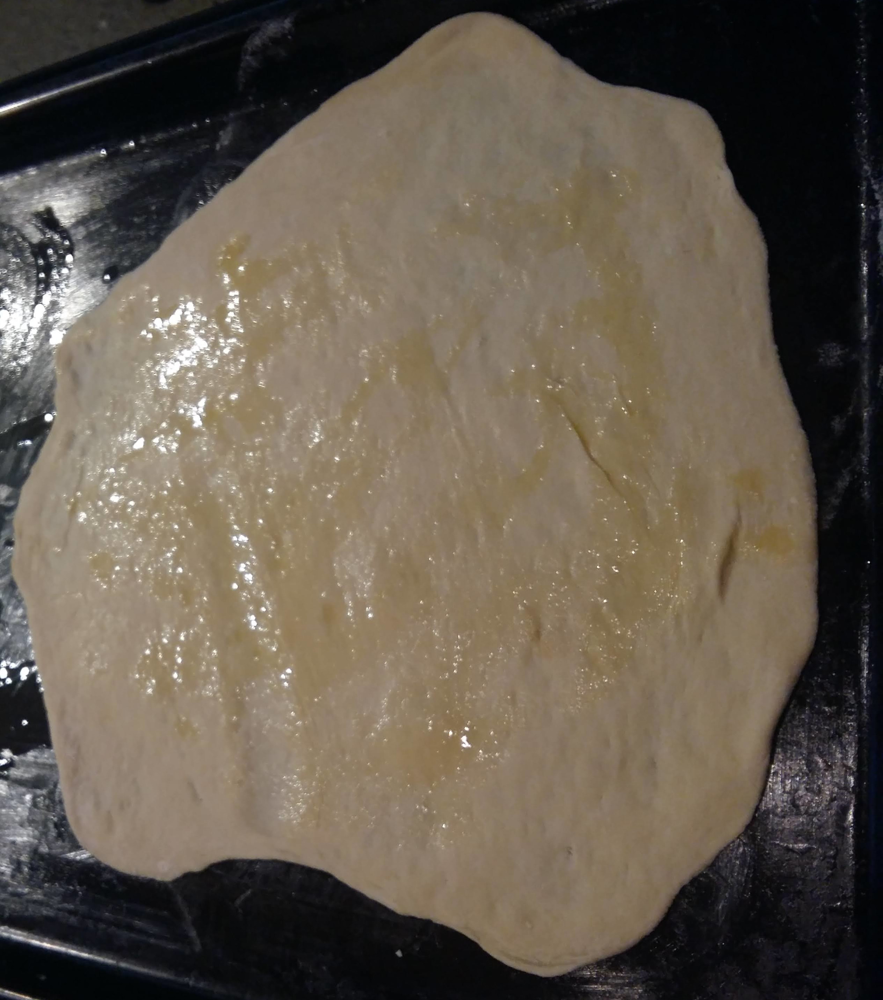

Here is my recipe for making pretty good Pizza's
Ingredients
- 5 Cups Flour
- 4 1/2 tsp Yeast
- 2 Cups Warm Water
- 2 Tbsp Olive Oil
- 2 tsp White Sugar
Method
- Get a measuring cup or bowl and put the yeast, water and sugar in it and stir
- While waiting for the yeast mixture to rise, get a large bowl and put the flour and olive oil in it and mix them together
- When the yeast mixture has risen pour it into the bowl with the flour
- Put your hands in the mixture and mix it together until it combines into a dough
- Put the dough onto a floured surface (I used a kitchen island) and knead it until it is firm (It should look like this)
- Put it into a bowl to rise for a few hours and leave it in the sun
- When the dough has risen you seperate it into as many small balls as you want (I usually do 4)
- Preheat the oven to 240 degrees celsius
- Get one ball and place it on the floured surface and get a rolling pin
- Roll out the dough and place it on an oven tray (The oven tray should either be buttered or have non stick baking paper on it)
- Repeat this process with all the balls and each one should look like this (They can vary in size and shape) 
- Then just add the toppings of your choice and then place in the oven for around 10 minutes or until fully cooked.
Making the dough
Making the pizza
Copyright Zaki Si-Lounis 2020